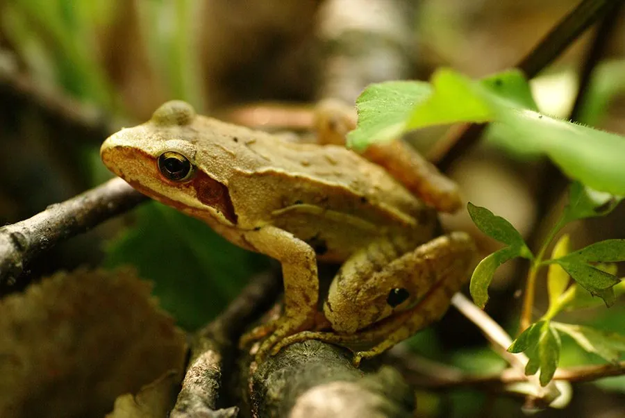

两栖动物 · 动物界
东北林蛙 Rana dybowskii

中国东北林区的常见蛙类，体色棕褐带黑斑，春季在池塘中产下大团卵块，俗称哈士蟆，其输卵管干制品即蛤蟆油。
- 分类
- 门脊索动物门纲两栖纲目无尾目科蛙科属蛙属
- 栖息环境
- 中国东北的针阔混交林、阔叶林、沼泽、溪流与水塘，繁殖期进入静水水体
- 地理分布
- 中国黑龙江、吉林、辽宁、内蒙古东部，以及俄罗斯远东和朝鲜半岛
- 保护级别
- IUCN 无危（LC）；中国“三有”保护动物
物种志
东北林蛙雌蛙体长 60–75 mm，雄蛙 55–65 mm。头部扁平，吻端钝圆，背部皮肤有细疣，体色棕褐、灰褐或红褐色，常带不规则黑斑，背侧褶明显；腹部浅黄或灰白，四肢有横纹，后肢长而发达，善跳跃与游泳。
它们分布于中国黑龙江、吉林、辽宁及内蒙古东部，也见于俄罗斯远东和朝鲜半岛，栖息于针阔混交林、阔叶林、沼泽与溪流附近。春季繁殖，成蛙在融雪后的池塘、水洼中抱对，雌蛙产下 1000–2000 粒卵组成的大卵块，约两周孵化。蝌蚪在水中生活约两个月完成变态，随后进入林地捕食昆虫、蜘蛛、蚯蚓和蜗牛。冬季它们潜入溪流深处或水下洞穴越冬。因被视为滋补品而被大量捕捉，野生种群需要保护。
形态与习性
- 食性昆虫、蜘蛛、蚯蚓和蜗牛
- 体长雌蛙 60–75 mm，雄蛙 55–65 mm
- 繁殖春季产卵，卵块含 1000–2000 粒卵
- 寿命约 8–10 年
- 越冬潜入溪流深处或水下洞穴
- 利用输卵管干制品即药材蛤蟆油
趣味知识
- 东北林蛙的输卵管干制品就是著名的蛤蟆油，因此它常被称为哈士蟆。
- 春季融雪后，成蛙会集中到池塘中抱对，产下的卵块可达上千粒。
- 蝌蚪在水中生活约两个月，完成变态后便爬上陆地进入林间。